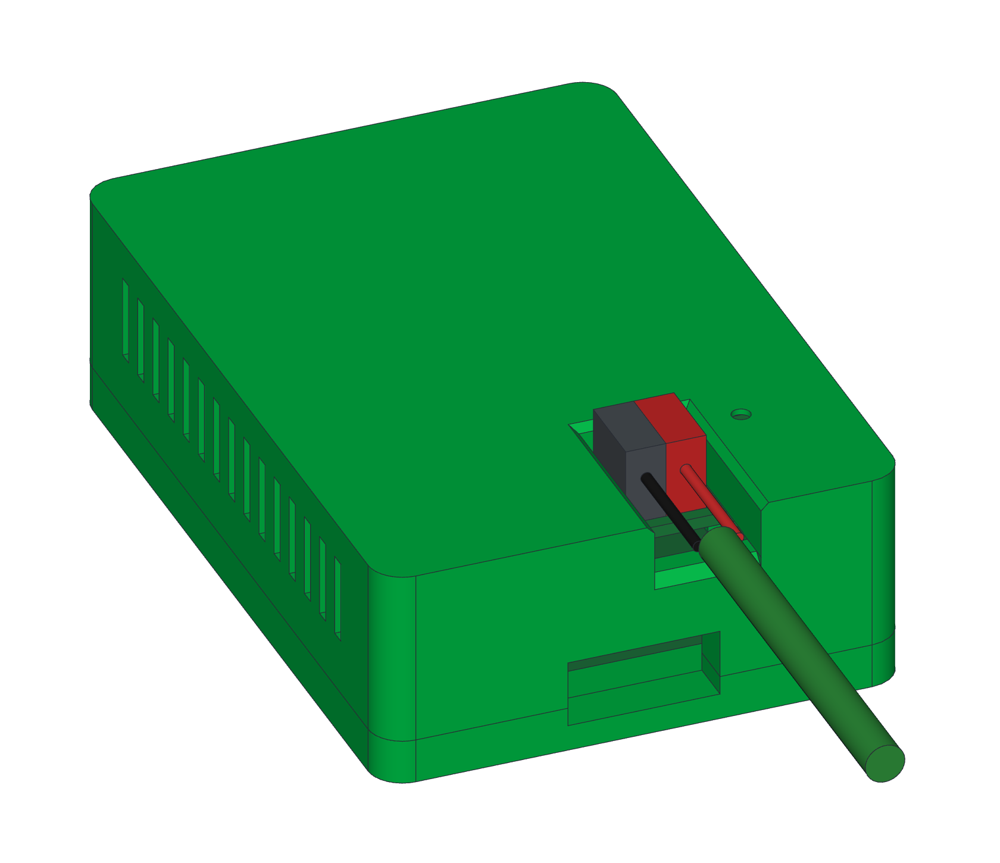
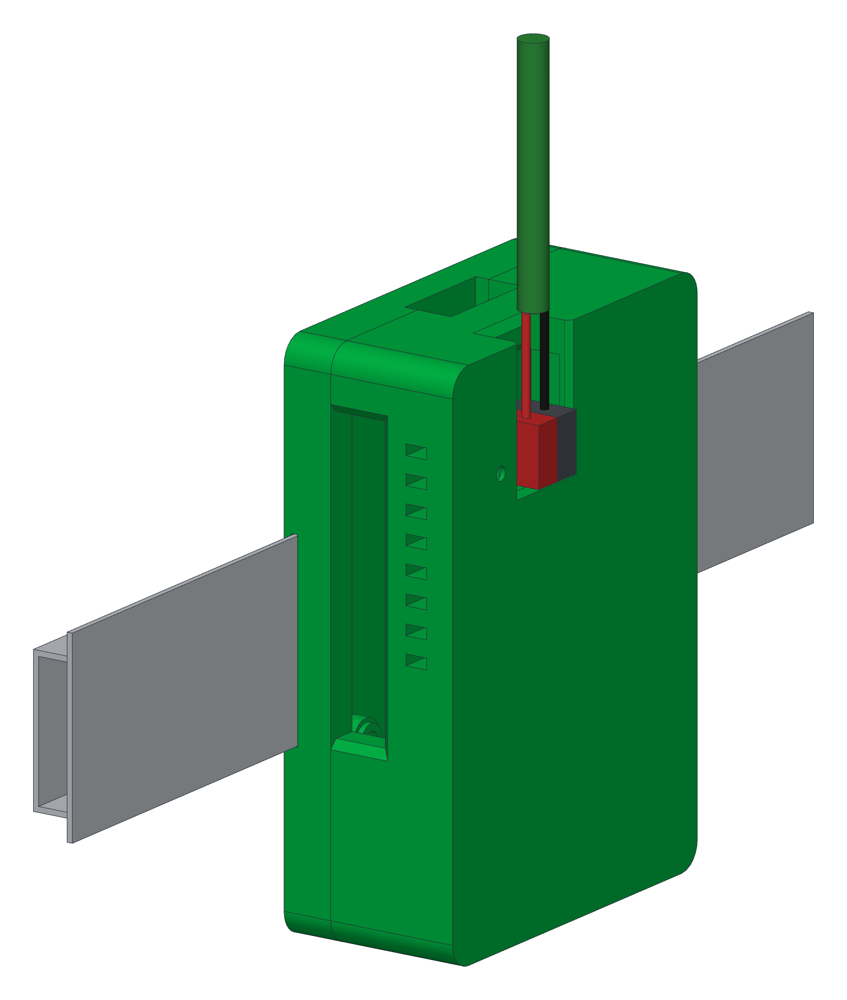

KNX-Box · Anleitung für Bastler · Weinzierl kBerry
Die Box direkt an der Busleitung, ganz ohne IP-Gateway.
Die KNX-Box hängt per Netzwerkkabel am Gateway oder, seit Version 1.8.4, mit dem Aufsteckmodul KNX BAOS 838 kBerry von Weinzierl selbst an der Linie: kein Tunnelplatz, und ein Busmonitor, der auch Quittungen und Wiederholungen zeigt. Hier steht, wie das Modul auf den Raspberry Pi kommt und wie der Pi vorbereitet wird.
Vorschau · auf einem Raspberry Pi 4 am echten Bus geprüft
Raspberry Pi 4 bzw. 5 von oben, im Maßstab. Der kBerry steckt auf den Pins 1–26 und liegt über der Platine, die Busklemme zeigt zur microSD-Seite.
Ein KNXnet/IP-Tunnel liefert nur Telegramme, die der Router durchlässt. Was auf der Leitung wirklich passiert, also wer quittiert, wer ablehnt und was wiederholt wird, sieht nur, wer selbst an der Leitung hängt.
Über IPNetzwerkkabel zum Router oder Switch am Gateway; die Box belegt rund um die Uhr einen Tunnelplatz.
Nur TelegrammeQuittungen (ACK, NAK, BUSY) und Wiederholungen bleiben unsichtbar.
PausierenBraucht die ETS den letzten Platz am Gateway, muss die Box Pause machen.
Mit dem kBerry an der LinieBusleitung direkt an die Klemme auf dem Modul, kein Gateway, kein Tunnelplatz.
Busmonitormit Quittungen und Wiederholungen, wie ihn sonst nur ein eigener Buszugang liefert.
Ohne ETSZum Mithören braucht die Box keine physikalische Adresse und keine Programmierung.
Das Modul
Der kBerry ist eine kleine Platine mit eigenem, zertifiziertem KNX-Stack. Er spricht mit dem Pi über dessen seriellen Anschluss (UART) an der Stiftleiste; Bus und Pi sind dabei galvanisch getrennt. Eine Platine mit dem einfacheren TP-UART-Baustein gibt es für die Stiftleiste derzeit nicht offiziell zu kaufen.
Größe56 × 35 mm, 8 mm hoch ohne Stecker, keine Befestigungslöcher
Anschluss Pi26-polige Buchsenleiste auf den Pins 1–26: 3,3 V, GND, TXD, RXD
Anschluss BusKNX-Steckklemme rot/schwarz auf dem Modul
VersorgungBusseite aus dem Bus (3 mA), Pi-Seite 3,3 V vom Pi; der Pi braucht sein eigenes Netzteil
Trennunggalvanisch getrennt zwischen Bus und Pi, SELV 29 V
ProtokollUART 19200 oder 115200 Baud, 8E1, FT1.2-Rahmen mit cEMI
Busmonitorlaut Hersteller-Handbuch alle Telegramme einschließlich Quittungen
Umgebung−5 bis +45 °C, nicht kondensierend
ETSgenerischer Eintrag mit 1000 Gruppenobjekten, ETS 4, 5 und 6; für die Box nicht nötig
Quellen: Beiblatt zum Modul (Stand 2025-01-23) und „KNX BAOS Starter Kit User's Guide“ von Weinzierl Engineering (weinzierl.de), Raspberry-Pi-Dokumentation „Configure UARTs“.
KNX Monitor · KNX-Box direkt an der Linie · Vorschau2
03 — Aufstecken
Pins 1–26, bündig am Pin-1-Ende.
Die 40-polige Stiftleiste von Pi 4 und Pi 5 ist gleich belegt. Der kBerry nutzt nur den Teil zum Pin-1-Ende hin, die Pins 27–40 bleiben frei. Richtig gesteckt liegt die Platine über dem Pi, nicht daneben.
Stiftleiste von oben, Rand der Platine oben. Grün: vom kBerry belegt. Rot: 5 V, dort darf die VCC-Buchse des Moduls nie landen.
Pi ausschalten und vom Strom trennen. Die Busleitung kommt erst ganz am Ende dran.
Pin 1 am Pi finden: das Ende der Stiftleiste weg von USB und LAN, in der inneren Reihe zur Platinenmitte. Auf der Unterseite hat Pin 1 ein eckiges Lötpad.
Pin 1 am kBerry finden: neben der Buchsenleiste stehen „VCC“ und, eine Reihe weiter am Rand, „GND ↓ ↑“.
Aufstecken: Buchse auf die Pins 1–26, bündig am Pin-1-Ende, gerade und ganz hinunter. Das Modul zeigt zur Vorderkante mit Strom und HDMI, die Busklemme zur microSD-Seite.
Kontrollieren: Alle 26 Buchsen sitzen auf Stiften, neben dem Modul sind sieben Stiftpaare frei, das Modul liegt über dem Pi.
Busleitung anschließen: rot an +, schwarz bzw. grau an −. Busspannung an, die Power-LED am Modul leuchtet.
Pi einschalten. Den Pi vorher vorbereiten (nächste Seite), sonst landen Bootmeldungen im Modul.
Um eine Reihe versetzt
liegt die VCC-Buchse des Moduls auf Pin 2 mit 5 V statt auf Pin 1 mit 3,3 V. Ragt das Modul über die Platinenkante hinaus, ist es um 180° gedreht. In beiden Fällen sofort ausschalten.
Im Gehäuse
Der kBerry hält nur an der Stiftleiste. Im kBerry-Gehäuse stützt ihn vorne eine gedruckte Modulbrücke über die ganze Breite (Seite 6 bis 8). Beim Pi 5 sitzt er über dem Active Cooler, der darunter nicht passt.
KNX Monitor · KNX-Box direkt an der Linie · Vorschau3
04 — Raspberry Pi vorbereiten
Den seriellen Anschluss für das Modul freimachen.
Ab Werk liegt auf GPIO 14 und 15 beim Pi 4 Bluetooth bzw. die schwache Mini-UART, beim Pi 5 gar nichts, und der Pi schreibt Bootmeldungen auf die serielle Konsole. Das Box-Image stellt das selbst um; diese Seite gilt für eigene Versuche auf Raspberry Pi OS.
Raspberry Pi 4
Raspberry Pi 5
Ab Werk
Mini-UART auf GPIO 14/15, der volle UART gehört Bluetooth
UART auf GPIO 14/15 aus, Konsole am eigenen Debug-Stecker
Einstellung
dtoverlay=disable-bt, Dienst hciuart aus
dtoverlay=uart0-pi5
Gerät
/dev/ttyAMA0
/dev/ttyAMA0
Achtung
Mini-UART kann keine Parität, für das Modul ungeeignet
keinenable_uart=1: sonst gehen Kernel-Meldungen an das Modul
1 · config.txt
Eine Datei für beide Modelle, die Abschnitte gelten je nach Pi.
# Login-Konsole über serial aus, Port an
sudo raspi-config nonint do_serial_cons 1
# nur Pi 4
sudo systemctl disable hciuart
sudo reboot
3 · Prüfen
# kein console=serial0 mehr
cat /proc/cmdline
# Gerät da, Gruppe dialout
ls -l /dev/ttyAMA0
# eigener Benutzer darf zugreifen
sudo usermod -aG dialout $USER
4 · Leitung testen, ohne Modul
Pi aus, Pin 8 und Pin 10 mit einer Steckbrücke verbinden, Pi an. Was man tippt, muss zurückkommen:
sudo apt install picocom
picocom -b 19200 -y e /dev/ttyAMA0
Beenden mit Strg+A, Strg+X. Danach Brücke ab, Modul aufstecken.
KNX Monitor · KNX-Box direkt an der Linie · Vorschau4
05 — Erster Test und Stand
Was geprüft ist und was noch offen ist.
Das Box-Image bringt eine Prüfung mit: In der App unter Box-Einstellungen → KNX-HAT fährt die Box die Schritte unten ab und zeigt, was das Modul antwortet.
01 · LEITUNG
Gerät da, Konsole aus; mit Steckbrücke zwischen Pin 8 und 10 kommt das Echo zurück.
02 · MODUL
Busspannung an, Power-LED leuchtet, das Modul antwortet auf einen FT1.2-Reset.
03 · TELEGRAMME
Im Link-Layer-Modus kommen die Telegramme eines Tasters an.
04 · BUSMONITOR
Im Busmonitor-Modus erscheinen zusätzlich ACK, NAK und Wiederholungen.
Laut HerstellerFT1.2 mit cEMI, 19200 Baud 8E1, umschaltbar auf 115200
GeprüftPi 4 am echten Bus: Der Busmonitor liefert Quittungen, Senden im Link Layer klappt
BusmonitorOb der Modus vorhanden ist, meldet das Modul selbst (cEMI PID 64)
Noch offenPi 5, Dauerbetrieb, Ausfall der Busspannung, einzelne Lücken im Busmonitor
Versorgungaus dem Bus; ohne Busspannung antwortet das Modul nicht
Noch offenReicht 19200 Baud bei hoher Buslast, klappt 115200?
Erfahrungen anderer
In Foren läuft der kBerry meist mit knxd oder Calimero, vor allem an Pi 3 und 4. Die häufigsten Fehler: Busleitung falsch an der Klemme, serielle Konsole oder Bluetooth noch auf dem Anschluss, und ein Modul, das sich erst nach dem Aus- und Einschalten von Pi und Busnetzteil wieder meldet.
Mitmachen
Wer schon einen kBerry hat und mittesten mag: Erfahrungen, Fotos und den kopierten Prüfbericht gern im öffentlichen Issue zum direkten Busanschluss, github.com/regetskcob/KNX-Monitor/issues/1.
Alle Angaben ohne Gewähr, am Bus bisher nur auf einem Pi 4 geprüft. Arbeiten an der KNX-Anlage nur mit Fachkenntnis; Busleitung und Netzspannung im Verteiler sicher trennen. Der kBerry ist ein Produkt der Weinzierl Engineering GmbH; KNX Monitor ist unabhängig davon. knx-monitor.de/box
KNX Monitor · KNX-Box direkt an der Linie · Vorschau5
06 — Gehäuse
Ein schlankes Gehäuse, das den kBerry trägt.
Der schlanke Deckel macht die Box nur 29,5 mm hoch; die Busklemme steht gut 2 mm oben heraus. Eine Schürze umschließt die Klemme, hält Staub ab und stützt das Modul, wenn man die Klemme abzieht. Vorne trägt eine gedruckte Modulbrücke den kBerry.
Schritt 1 · Einschmelzgewinde setzen
ABoden, Unterseite liegt auf
B4× Einschmelzgewinde M2.5 × 4 in die Dome (Bohrung Ø 3,4)
CSchlanker Deckel, umgedreht, Oberseite liegt auf
D4× Einschmelzgewinde M3 × 4 in die Ecksäulen (Bohrung Ø 4,5)
Boden und Deckel liegen auf ihrer geschlossenen Seite, der Deckel also umgedreht. Die Einsätze mit dem Lötkolben von oben bündig einschmelzen und abkühlen lassen. Die Bohrungen (M2.5: Ø 3,4, M3: Ø 4,5) sind per Stufenprobe bestimmt und gelten für 0,2 mm Schichthöhe; mit 0,28 mm fallen sie zu eng aus.
DruckteileBoden (oder Boden für die Hutschiene mit Clip), schlanker Deckel, Modulbrücke; optional USB-Abdeckung
PassprobenStufenprobe für die Einschmelzgewinde, Deckel-Passprobe (dünne Platte mit Schürze und Stiftloch)
MaterialPETG oder ASA, bei 0,2 mm Schichthöhe drucken, 4–5 Perimeter, ohne Stützen
Maße100 × 69 × 29,5 mm; passt für Pi 3B, 3B+, 4B und 5
KNX Monitor · KNX-Box direkt an der Linie · Vorschau6
07 — Schritt 2 · Montage
Alles an seinem Platz.
Nummern in Montagereihenfolge, die Einschmelzgewinde sitzen schon. Die Einsatzbohrungen sind am Druck bestimmt, das vollständige Gehäuse bleibt Vorschau.
01Boden
02Einschmelzgewinde M2.5 (aus Schritt 1)
03Raspberry Pi 3B, 3B+, 4B oder 5
042× M2.5 × 6, Pi hinten
05Modulbrücke (gedruckt)
062× M2.5 × 16 durch Brücke und Pi
07Weinzierl KNX BAOS 838 kBerry
08Buchsenleiste auf GPIO-Pins 1–26
09KNX-Busklemme, rot vorne, grau hinten
10Schlanker Deckel mit Schürze um die Klemme
11Stiftloch über der Programmiertaste
124× M3 × 8 Zylinderkopf von unten
13Klemmenöffnung mit Aderkanal nach links
14USB-Abdeckung (optional)
KNX Monitor · KNX-Box direkt an der Linie · Vorschau7
08 — Montage
Schritt für Schritt zusammengebaut.
Alle Schrauben greifen in Einschmelzgewinde, das Gehäuse lässt sich also beliebig oft öffnen. Die Busklemme zieht man bei geschlossenem Deckel nach oben ab.
Einschmelzgewinde wie in Schritt 1 setzen: 4× M2.5 × 4 in den Boden (Ø 3,4), 4× M3 × 4 in den Deckel (Ø 4,5).
Pi auf die Dome legen und hinten mit 2× M2.5 × 6 festschrauben (03, 04). Optional vorher flache Kühlkörper bis 8 mm Höhe auf SoC und RAM.
Modulbrücke auf die beiden vorderen Pi-Löcher setzen, 2× M2.5 × 16 durch Brücke und Pi in die Einsätze (05, 06).
Gummipunkt unter dem vorderen Ende des kBerry entfernen; die Brücke stützt das Modul.
kBerry auf die GPIO-Pins 1–26 stecken wie auf Seite 3, Busklemme aufstecken (07–09).
Deckel aufsetzen, die Schürze umschließt die Klemme; 4× M3 × 8 von unten durch die Ecken des Bodens (10, 12).
Busleitung durch den Aderkanal links an die Klemme (13).
USB-Abdeckung (optional) mit den Zapfen in die USB-Buchsen stecken, Griffmulde zur RJ45-Buchse; beim Pi 3 und 5 um 180° gedreht (14).
Erst die Passproben
Zuerst die Stufenprobe drucken und Einsätze einschmelzen: Halten sie in Ø 3,4 bzw. Ø 4,5, ohne durchzufallen oder zu klemmen? Dann die Deckel-Passprobe allein an die rechten Pi-Löcher schrauben (sie belegt wie die Brücke das vordere rechte Loch): Liegt die Klemme mittig in der Schürze, trifft das Stiftloch die Taste? Danach die Brücke.
USB-Abdeckung
Optionales Zubehör: schließt das rechte Fenster vor den USB-Buchsen, die Netzwerkbuchse bleibt frei. Vier Zapfen stecken etwa 6 mm tief in den Buchsen; zum Abziehen an der Griffmulde schräg herausziehen. Am Pi noch nicht getestet.

Fertig angeschlossen: rote Ader (+) an Rot, schwarze (−) an Grau, durch den Aderkanal nach links; auch eine durchgeschleifte zweite Leitung passt.
Die Status-LEDs sind bei geschlossenem Deckel nicht sichtbar, die Programmiertaste erreicht man mit einem Stift. Der Active Cooler des Pi 5 passt unter dem kBerry nicht. Beim Pi 5 sind Power-Taster und PCIe-Anschluss bei geschlossenem Gehäuse nicht erreichbar.
KNX Monitor · KNX-Box direkt an der Linie · Vorschau8
09 — Optional · Montage im Verteiler
Auf die Hutschiene geklickt.
Für den Verteiler gibt es einen zweiten Boden mit Aufnahme für TS35-Hutschienen und einen gefederten Clip, der unten angeschraubt wird. Deckel, Modulbrücke und Montage bleiben gleich.

Hochkant auf der Schiene: KNX-Leitung oben, LAN und USB unten.
Breite auf der Schiene69 mm, etwa 4 Teilungseinheiten
BautiefeBox 32,5 mm hoch (Boden 3 mm dicker), mit Schiene etwa 40 mm
Zusätzlich nur für die Hutschiene2× Einschmelzgewinde M3 × 4, 2× Schraube M3 × 6 ISO 7380
AnschlüsseUSB-C und HDMI liegen seitlich: Winkelstecker verwenden oder Abstand zum Nachbargerät lassen
Drucken: Boden knx-box-case-base-din-rail.stl statt des normalen, Unterseite aufs Bett. Dazu den Clip knx-box-case-din-rail-clip-1.stl (empfohlen), Druck und Varianten siehe Seite 10. Beide ohne Stützen, 0,2 mm Schichthöhe; im Slicer keine Stützen erzwingen.
Clip montieren wie auf Seite 10: zwei Einschmelzgewinde M3 in den Boden, Clip unten (LAN-Seite) einlegen und mit 2× M3 × 6 ISO 7380 anschrauben.
Zusammenbauen wie auf Seite 8; die Deckelschrauben bleiben M3 × 8.
Aufsetzen: oben in die Schiene einhängen, unten andrücken, bis die Feder einrastet.
Abnehmen: einen Schraubendreher unten in das Loch des Lösehebels stecken und nach außen ziehen; die Box kippt oben aus der Schiene.
Vorschau
Hutschienen-Boden und Clip sind nur am Modell gegen ein TS35-Profil geprüft, erst teilweise am Druck. Beim Clip ist Variante · gewählt, sie wird noch nachgebessert. Im Verteiler gelten die üblichen Regeln: Busleitung und Netzspannung sicher trennen, für den Pi ein Netzteil mit sicherer Trennung, Arbeiten nur mit Fachkenntnis.
KNX Monitor · KNX-Box direkt an der Linie · Vorschau9
10 — Optional · Clip montieren
Der Clip wird angeschraubt.
Ein steifer Riegel mit der Rastnase hängt an zwei Mäanderfedern und weicht beim Einrasten als Ganzes aus. Zwei Schrauben halten den Clip unten im Boden.
Boden mit der Unterseite nach oben, gezeigt ist Variante ··; empfohlen ist Variante · (clip-1), Aufbau und Montage sind gleich.
01Boden für die Hutschiene, Unterseite oben
02Aufnahme Hutschiene TS35
03Feste Lippe, kommt zuerst in die Schiene
04Clip-Tasche mit 2 Domen
052× Einschmelzgewinde M3 × 4
06Riegel-Clip (gedruckt), Senkungen außen
07Mäanderfedern
08Rastlippe mit Einführschräge
09Lösehebel mit Schraubendreher-Loch
10Punkte = Federstärke (·, ··, ···)
112× M3 × 6 Flach- bzw. Linsenkopf (ISO 7380)
Drucken: flach, Senkungen und Punkte aufs Bett, mindestens 2 Wandlinien, 100 % Füllung, ohne Stützen. Die Federn biegen sich in der Schichtebene.
Einsätze: Boden mit der Unterseite nach oben, zwei Einschmelzgewinde M3 (Ø 4,5) bündig in die Dome der Clip-Tasche.
Einlegen: Clip mit Senkungen und Punkten nach außen, Rastlippe zur Schienennut, Lösehebel zur LAN-Seite.
Anschrauben: die zwei M3 × 6 festziehen, dann weiter wie gewohnt nach Seite 7 und 8.
Variante · (clip-1), empfohlenStege 1,2 mm, ca. 5 N, am steifsten
Variante ·· (clip-2)Stege 1,0 mm, ca. 3 N
Variante ··· (clip-3)5 Stege 0,8 mm, ca. 1,3 N, am weichsten
Empfohlen ist Variante · (clip-1): Sie hat sich im Drucktest durchgesetzt und wird noch nachgebessert. Die weicheren Varianten ·· und ··· bleiben vorerst als Testvarianten dabei. Die Kräfte sind grobe Schätzungen für PLA, mit PETG etwa 40 % niedriger.
KNX Monitor · KNX-Box direkt an der Linie · Vorschau10